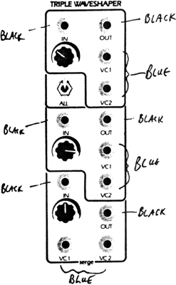
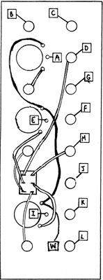

|

Triple VC WaveshaperParts for Kit
 Put the switch in the down (off) position for these first checks. Plug an audio frequency sawtooth wave into the IN jack on the top section. Monitor the OUT jack while turning the knob to about 2 o'clock. A triangle type sound should be heard (less rich in harmonics than the sawtooth, with a slightly hollow, ready sound). Plug a control voltage source into the VC1 input, and a full scale change (O to +5 volts) will change the triangle back to the sawtooth shape. Un-patch the control voltage from VC1 and connect it to VC2. The resulting effect as the control voltage moves through its range is a sound resembling a mild form of pulse-width modulation, with a phasing type sound that sweeps upward in harmonic content as the voltage goes from 0 to full. The outputs may blank out. Should that happen, the knob can be adjusted for best range. The other two sections should be checked the same way. With the switch in the UP position, a signal applied to the lower section of the TWS will be routed through all sections. Outputs will appear at all three output sections. Listening to the top section, note that there are now three knob settings that will affect the sound and six VC inputs. In this up (or ALL) position, audio inputs to the middle and top section are disconnected.
|